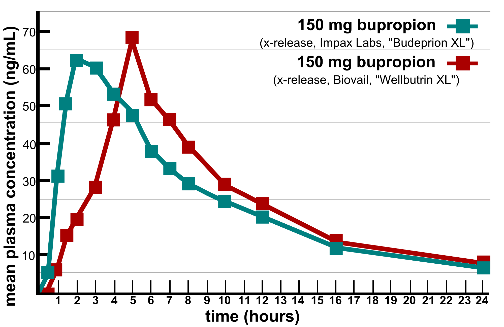

7 Models with one variable in continuous time
In the previous chapters we have considered discrete time models, in which time is measured in integers. This worked well to describe processes that happen in periodic cycles, like cell division or heart pumping. Many biological systems do not work this way. Change can happen continuously, that is, at any point in time. For instance, the concentration of a biological molecule in the cell changes gradually, as does the voltage across the cell membrane in a neuron.
The models for continuously changing variables require their own set of mathematical tools. Differential equations use derivatives to describe how a variable changes with time. There is a tremendous amount of knowledge accumulated by mathematicians, physicists and engineers for analyzing and solving differential equations. There are many classes of differential equations for which it is possible to find analytic solutions, often in the form of “special functions.” Differential equations courses for physicists and engineers are typically focused on learning about the variety of existing tools for solving a few types of differential equations. For the purposes of biological modeling, knowing how to solve a limited number of differential equations is of limited usefulness. We will instead focus on learning how to analyze the behavior of differential equations in general, without having to solve them on paper.
In this chapter we will analyze linear differential equations, which have mathematical solutions, and learn about numerical methods for computing and plotting these solution. Specifically, you will learn to:
- build differential equations of population size
- mathematically solve linear differential equations
- put together a model of membrane potential
- compute numeric solutions of these models
- compute and analyze the error in numeric solutions
7.1 Ordinary differential equations
We consider models with continuous time, for which it does not make sense to break time up into equal intervals. Instead of equations describing the increments in the dependent variable from one time step to the next, we will see equations with the instantaneous rate of the change (derivative) of the variable. For discrete time models, one formulation of the general difference equation was this:
\[ x_{t+1} - x_t = g(x) \]
\(g(x)\) is a function of the dependent variable, which may be as simple as 0 or \(ax\), or can be horribly nonlinear and complicated.
For difference equations, the time variable \(t\) is measured in the number of time steps (\(\Delta t\)), whether the time step is 20 minutes or 20 years. In continuous time models, we express \(t\) in actual units of time, instead of counting time steps. Thus, what we wrote as \(t+1\) for discrete time should be expressed as \(t+\Delta t\) for continuous time. The left-hand-side of the equation above describes the change in the variable \(x\) over one time step \(\Delta t\). We can write it as a Newton’s quotient, and then take the limit of the time step shrinking to 0:
\[ \lim_{\Delta t \rightarrow 0} \frac{x(t +\Delta t) - x(t)} {\Delta t} = \frac{d x} {dt} = g(x) \]
To take the limit of the time step going to 0 means that we allow the increments in time to be infinitesimally small, and therefore the time variable may be any real number. The equation above thus becomes a differential equation, because it involves a derivative of the dependent variable.
In general, an ordinary differential equation is defined as follows:
An ordinary differential equation is an equation that contains derivatives of the dependent variable (e.g. \(x\)) with respect to an independent variable (e.g. \(t\)).
For example:
\[ \frac{dx^2}{dt^2}+ 0.2 \frac{dx}{dt} - 25 = 0 \]
There are at least two good reasons to use differential equations for many applications. First, some events happen very frequently and non-periodically, so it is more reasonable to allow time to flow continuously instead of in steps. The second reason is mathematical: it turns out that dynamical systems with continuous time, described by differential equations, are better behaved than difference equations. This has to do with the essential “jumpiness” of difference equations. Even for simple nonlinear equations, the value of the variable after one time step can be far removed from its last value. This can lead to highly complicated solutions, as we saw in the logistic model in Chapter 1.
7.1.1 growth proportional to population size
We will now build up some of the most common differential equations models. First up, a simple population growth model with a constant growth rate. Suppose that in a population each individual reproduces with the average reproductive rate \(r\). This is reflected in the following differential equation:
\[ \frac{dx} {dt} = \dot x = r x \] (linear_ode)
This expression states that the rate of change of \(x\), which we take to be population size, is proportional to \(x\) with multiplicative constant \(r\). We will frequenlty use the notation \(\dot x\) for the time derivative of \(x\) for aesthetic reasons.
First, we apply dimensional analysis to this model. The units of the derivative are population per time, as can be deduced from the Newton’s quotient definition. Thus, the units in the equation have the following relationship:
\[ \frac{[population]}{[time]} = [r] [population] = \frac{1}{[time]}[population] \]
This shows that as in the discrete time models, the dimension of the population growth rate \(r\) is inverse time, or frequency. The difference with the discrete time population models lies in the time scope of the rate. In the case of the difference equation, \(r\) is the rate of change per one time step of the model. In the differential equation, \(r\) is the instantaneous rate of population growth. It is less intuitive than the growth rate per single reproductive cycle, just like the slope of a curve is less intuitive than the slope of a line. The population growth happens continuously, so the growth rate of \(r\) individuals per year does not mean that if we start with one individual, there will be \(r\) after one year. In order to make quantitative predictions, we need to find the solution of the equation, which we will see in the next section.
7.1.2 chemical kinetics
Reactions between molecules in cells occur continuously, driven by molecular collisions and physical forces. In order to model this complex behavior, it is generally assumed that reactions occur with a particular speed, known as the kinetic rate. A simple reaction of conversion from one type of molecule (\(A\)) to another (\(B\)) can be written as follows:
\[ A \rightarrow^k B \]
In this equation the parameter \(k\) is the kinetic rate, describing the speed of conversion of \(A\) into \(B\), per concentration of \(A\).
Chemists and biochemists use differential equations to describe the change in molecular concentration during a reaction. These equations are known as the laws of mass action. For the reaction above, the concentration of molecule \(A\) decreases continuously proportionally to itself, and the concentration of molecule \(B\) increases continuously proportionally to the concentration of \(A\). This is expressed by the following two differential equations:
\[\begin{aligned} \dot A &=& - k A \\ \dot B &=& kA \end{aligned} \] (lin_chem_kin)
Several conclusions can be drawn by inspection of the equations. First, the dynamics depend only on the concentration of \(A\), so keeping track of the concentration of \(B\) is superfluous. The second observation reinforces the first: the sum of the concentrations of \(A\) and \(B\) is constant. This is mathematically demonstrated by adding the two equations together to obtain the following:
\[ \dot A + \dot B = -kA + kA = 0 \]
One of the basic properties of the derivative is that the sum of derivatives is the same as the derivative of the sum:
\[ \dot A + \dot B = \frac{d(A+B)}{dt} = 0 \]
This means that the sum of the concentrations of \(A\) and \(B\) is a constant. This is a mathematical expression of the law of conservation in chemistry: molecules can change from one type to another, but they cannot appear or disappear in other ways. In this case, a single molecule of \(A\) becomes a single molecule of \(B\), so it follows that the sum of the two has to remain the same. If the reaction were instead two molecules of \(A\) converting to a molecule of \(B\), then the conserved quantity is \(2A + B\). The concept of conserved quantity is very useful for the analysis of differential equations. We will see in later chapters how it can help us find solutions, and explain the behavior of complex dynamical systems.
7.2 Analytic solutions of linear ODEs
7.2.1 concepts of ODEs
Let us define some terminology for ODEs:
:::{.callout-note}
## Definition The order of an ODE is the highest order of the derivative of the dependent variable \(x\). :::
For example, \(\dot x = rx\) is a first order ODE, while \(\ddot x = - mx\) is a second order ODE (double dot stands for second derivative). In this chapter we will restrict ourselves to first-order ODEs that can be generally written as follows:
A first-order ODE is one where the derivative \(dx/dt\) is equal to a defining function \(f(x,t)\), like this:
\[ \frac{dx} {dt} = \dot x = f(x,t) \] (first-order-ode)
Note that the function may depend on both the dependent variable \(x\) and the independent variable \(t\). This leads to the next definition:
An ODE is autonomous if the defining function \(f\) depends only on the dependent variable \(x\) and not on \(t\).
For example, \(\dot x = 5x -4\) is an autonomous equation, while \(\dot x = 5t\) is not. An autonomous ODE is also said to have constant coefficients (e.g. 5 and -4 in the first equation above).
An ODE is homogeneous if every term in the defining function involves either the dependent variable \(x\) or its derivative.
For example, \(\dot x = x^2 + \sin(x)\) is homogeneous, while \(\dot x = -x + 5t\) is not. Most simple biological models that we will encounter in the next two chapters are autonomous, homogeneous ODEs. However, inhomogeneous equations are important in many applications, and we will encounter them at the end of the present section.
7.2.2 solutions via separate-and-integrate
In contrast with algebraic equations, we cannot simply isolate \(x\) on one side of the equal sign and find the solutions as one, or a few numbers. Instead, solving ordinary differential equations is very tricky, and no general strategy for solving an arbitrary ODE exists. Moreover, a solution for an ODE is not guaranteed to exist at all, or not for all values of \(t\). We will discuss some of the difficulties later, but let us start with equations that we can solve.
The analytic (or exact) solution of an ordinary differential equation is a function of the independent variable that satisfies the equation. If no initial value is given, then the general solution function will contain an uknown integration constant. If an initial value is specified, the integration constant can be found to obtain a specific solution.
This means that the solution function obeys the relationship between the derivative and the defining function that is specified by the ODE. To verify that a function is a solution of a given ODE, take its derivative and check whether it matches the other side of the equation.
Example. The function \(x(t) = 3t^2 +C\) is a general solution of the ODE \(\dot x = 6t\), which can be verified by taking the derivative: \(\dot x (t) = 6t\). Since this matches the right-hand side of the ODE, the solution is valid.
Example. The function \(x(t) = Ce^{5t}\) is a general solution of the ODE \(\dot x = 5x\). This can be verified by the taking the derivative: \(\dot x = 5C e^{5t}\) and comparing it with the right-hand side of the ODE: \(5x = 5 Ce^{5t}\). Since the two sides of the equation agree, the solution is valid.
In contrast with algebraic equations, we cannot simply isolate \(x\) on one side of the equal sign and find the solutions as one, or a few numbers. Instead, solving ordinary differential equations is very tricky, and no general strategy for solving an arbitrary ODE exists. Moreover, a solution for an ODE is not guaranteed to exist at all, or not for all values of \(t\). We will discuss some of the difficulties later, but let us start with equations that we can solve.
The most obvious strategy for solving an ODE is integration. Since a differential equation contains derivatives, integrating it can remove the derivative. In the case of the general first order equation, we can integrate both sides to obtain the following:
\[ \int \frac{dx}{dt} dt = \int f(x,t) dt \Rightarrow x(t) + C = \int f(x,t) dt \]
The constant of integration \(C\) appears as in the standard antiderivative definition. It can be specified by an initial condition for the solution \(x(t)\). Unless the function \(f(x,t)\) depends only on \(t\), it is not possible to evaluate the integral above. Instead, various tricks are used to find the analytic solution. The simplest method of analytical solution of a first-order ODEs, which I call separate-and-integrate consists of the following steps:
Example. Consider a very simple differential equation: \(\dot x = a\), where \(\dot x\) stands for the time derivative of the dependent variable \(x\), and \(a\) is a constant. It can be solved by integration:
\[ \int \frac{dx}{dt} dt = \int a dt \Rightarrow x(t) + C = at \]
This solution contains an undetermined integration constant; if an initial condition is specified, we can determine the complete solution. Generally speaking, if the initial condition is \(x(0) = x_0\), we need to solve an algebraic equation to determine \(C\): \(x_0 = a \times 0 - C\), which results in \(C = -x_0\). The complete solution is then \(x(t) = at + x_0\). To make the example more specific, if \(a = 5\) and the initial condition is \(x(0) = -3\), the solution is \(x(t) = 5t -3\).
Example. Let us solve the linear population growth model in equation {eq}linear_ode: \(\dot x = rx\). The equation can be solved by first dividing both sides by \(x\) and then integrating:
\[ \int \frac{1}{x} \frac{d x}{dt} dt = \int \frac{dx}{x} = \int r dt \Longrightarrow \log |x| = rt + C \Longrightarrow x = e^{rt+C} = Ae^{rt} \]
We used basic algebra to solve for \(x\), exponentiating both sides to get rid of the logarithm on the left side. As a result, the additive constant \(C\) gave rise to the multiplicative constant \(A=e^C\). Once again, the solution contains a constant which can be determined by specifying an initial condition \(x(0) = x_0\). In this case, the relationship is quite straightforward: \(x(0) = A e^0 = A\). Thus, the complete solution for equation {eq}linear_ode is:
\[ x(t) = x_0e^{rt} \]
As in the case of the discrete-time models, population growth with a constant birth rate has exponential form. Once again, please pause and consider this fact, because the exponential solution of linear equations is one of the most basic and powerful tools in applied mathematics. Immediately, it allows us to classify the behavior of linear ODE into three categories:
The rate \(r\) being positive means that the birth rate is greater than the death rate in the population, leading to unlimited population growth. If the death rate is greater, the population will decline and die out. If the two are exactly matched, the population size will remain unchanged.
Example. The solution for the biochemical kinetic model in equation {eq}lin_chem_kin is identical except for the sign: \(A(t) = A_0 e^{-kt}\). When the reaction rate \(k\) is positive, as it is in chemistry, the concentration of \(A\) decays to 0 over time. This is consistent with the arrow diagram of this model, since there is no back reaction, and the only chemical process is conversion of \(A\) into \(B\). The concentration of \(B\) can be found by using the fact that the total concentration of molecules in the model is conserved. Let us call it \(C\). Then \(B(t) = C - A(t) = C- A_0e^{-kt}\). The concentration of \(B\) increases to the asymptotic limit of \(C\), meaning that all molecules of \(A\) have been converted to \(B\).
7.2.3 solution of nonhomogeneous ODEs
ODEs that contain at least one term without the dependent variable are a bit more complicated. If the defining function is \(f(x,t)\) is linear in the dependent variable \(x\), they can be solved on paper using the same separate-and-integrate method, modified slightly to handle the constant term. Here are the steps to solve the generic linear ODE with a constant term \(\dot x = ax +b\):
Example: Let us solve the following ODE model using separate and integrate with the given initial value:
\[ \frac{dx}{dt} = 4x -100; \; x(0) = 30 \]
- Separate the dependent and independent variables:
\[ \frac{dx}{4x - 100} = dt \]
- Integrate both sides:
\[ \int \frac{dx}{4x -100} = \int dt \Rightarrow \frac{1}{4} \int \frac{du}{u} = \frac{1}{4} \ln | 4x- 100 | = t + C \]
The integration used the substitution of the new variable \(u=4x -100\), with the concurrent substitution of \(dx = du/4\).
- Solve for the dependent variable:
\[ \ln | 4x- 100 | = 4t + C \Rightarrow 4x-100 = e^{4t} B \Rightarrow x = 25 + Be^{4t} \]
Here the first step was to multiply both sides by 4, and the second to use both sides as the exponents of \(e\), removing the natural log from the left hand side, and finally simple algebra to solve for \(x\) as a function of \(t\).
- Solve for the integration constant:
\[ x(0) = 25 + B = 30 \Rightarrow B = 5 \]
Here the exponential “disappeared” because \(e^0=1\). Therefore, the specific solution of the ODE with the given initial value is
\[ x(t) = 25 + 5e^{4t} \]
At this point, you might have noticed something about solutions of linear ODEs: they always involve an exponential term, with time in the exponent. Knowing this, it is possible to bypass the whole process of separate-and-integrate by using the following short-cut.
This can be verified by plugging the solution back into the ODE to see if it satisfies the equation. First, take the derivative of the solution to get the left-hand side of the ODE: \(\frac{dx}{dt} = Ca e^{at}\); then plug in \(x(t)\) into the right hand side of the ODE: $ aCe^{at} + aD +b$. Setting the two sides equal, we get: \(Ca e^{at} = aCe^{at} + aD +b\), which is satisfied if \(aD + b = 0\), which means \(D= -b/a\). This is consistent with the example above, the additive constant in the solution was 25, which is \(-b/a= -(-100)/4 = 25\).
Thus, if you want to solve a linear no ODE \(\dot x= ax +b\) , you can bypass the separate-and-integrate process, because the general solution always has the form in equation {eq}sol-nonhom. So the upshot is that all linear ODEs have solutions which are exponential in time with exponential constant coming from the slope constant \(a\) in the ODE. The dynamics of the solution are determined by the sign of the constant \(a\): if \(a>0\), the solution grows (or declines) without bound; and if \(a<0\), the solution approaches an asymptote at \(-b/a\) (from above or below, depending on the initial value).
7.2.4 model of drug concentration
Describing and predicting the dynamics of drug concentration in the body is the goal of pharmacokinetics. Any drug that humans take goes through several stages: first it is administered (put into the body), then absorbed, metabolized (transformed), and excreted (removed from the body) (rosenbaum_basic_2011?). Almost any drug has a dose at which it has a toxic effect, and most can kill a human if the dose is high enough. Drugs which are used for medical purposes have a therapeutic range, which lies between the lowest possible concentration (usually measured in the blood plasma) that achieves the therapeutic effect and the concentration which is toxic. One of the basic questions that medical practitioners need to know is how much and how frequently to administer a drug to maintain drug concentration in the therapeutic range.
The concentration of a drug is a dynamic variable which depends on the rates of several processes, most directly on the rate of administration and the rate of metabolism. Drugs can be administered through various means (e.g. orally or intravenously) which influences their rate of absorption and thus how the concentration increases. Once in the blood plasma, drugs are metabolized primarily by enzymes in the liver, converting drug molecules into compounds that can be excreted through the kidneys or the large intestine. The process of *metabolism proceeds at a rate that depends on both the concentration of the drug and on the enzyme that catalyzes the reaction. For some drugs the metabolic rate may be constant, or independent of the drug concentration, since the enzymes are already working at full capacity and can’t turn over any more reactions, for example alcohol is metabolized at a constant rate of about 1 drink per hours for most humans. {numref}fig-alc-met shows the time plots of the blood alcohol concentration for 4 males who ingested different amounts of alcohol, and the curves are essentially linear with the same slope after the peak. For other drugs, if the plasma concentration is low enough, the enzymes are not occupied all the time and increasing the drug concentration leads to an increase in the rate of metabolism. One can see this behavior in the metabolism of the anti-depressant drug bupropion in figure {numref}fig-bupropion, where the concentration curve shows a faster decay rate for higher concentration of the drug than for lower concentration. In the simplest case, the rate of metabolism is linear, or proportional to the concentration of the drug, with proportionality constant called the first-order metabolic rate.

7.3 Membrane as electric circuit
In this example we will construct and analyze a model of electric potential across a membrane. The potential is determined by the difference in concentrations of charged particles (ions) on the two sides of the phospholipid bilayer, as shown in {numref}fig-cell-mem. The ions can flow through specific channels across the membrane, changing the concentration and thus the electric potential. K.S. Cole used principles of electrical circuits to devise the first quantitative model of the membrane voltage (cole_dispersion_1941?), which eventually led to more sophisticated models of Hodgkin and Huxley, and others.
To start, we will review the physical concepts and laws describing the flow of charged particles. The amount of charge (number of charged particles) is denoted by \(Q\). The rate of flow of charge per time is called the current: \(I = \frac{dQ}{dt}\). Current can be analogized to the flow of a liquid, and the difference in height that drives the liquid flow is similar to the electric potential, or voltage. The relationship between voltage and current is given by Ohm’s law: \(V = IR\) where \(R\) is the resistance of an electrical conductance, and sometimes we use the conductance \(g = 1/R\) in the relationship between current and voltage:
\[ gV = I \]
There are devices known as capacitors, which can store a certain amount of electrical potential in two conducting plates separated by a dielectric (non-conductor). The voltage drop across a capacitor is described by the capacitor law:
\[ V_C = \frac{Q}{C} \]
where \(C\) is the capacitance and \(Q\) is the charge of the capacitor.
Lipid bilayer membranes separate media with different concentrations of ions on the two sides, typically the extracellular and cytoplasmic sides. The differences in concentrations of different ions produce a membrane potential. The membrane itself can be thought of as a capacitor, with two charged layers separated by the hydrophobic fatty acid tails in the middle. In addition, there are ion channels that allow ions to flow from the side with higher concentration to that with lower (these are known as passive channels, as opposed to active pumps that can transport ions against the concentration gradient, which we will neglect for now.) These channels are often gated, which means that they conduct ions up to a certain voltage \(V_R\), but then close and reverse direction at higher voltage. The channels are analogous to conducting metal wires, and therefore act as resistors with a specified conductance \(g\). Finally, the electrochemical concentrations of ions act as batteries for each species, (Na\(^+\), K\(^+\), etc.) The overall electric circuit diagram of this model is shown in {numref}fig-mem-circuit.

Because the different components are connected in parallel, the total current has to equal the sum of the current passing through each element: the capacitor (membrane) and the gated resistors (specific ion channels). The current flowing through a capacitor can be found by differentiating the capacitor law:
\[ \frac{dQ}{dt} = I = C \frac{dV_C}{dt} \]
The current flowing through each ion channel is described by this relation: \(I = g (V-V_R)\) Then, the total ion flow through the system is described as follows, where \(i\) denotes the different ionic species:
\[ I_{app} = C \frac{dV}{dt} + \sum_i g (V-V_{Ri}) \]
Let us reduce this model to a simple version, where there is no applied current \(I_{app} = 0\) and only a single ionic species with reversal potential \(V_R\). Then the differential equation looks like this:
\[ \frac{dV}{dt} = -\frac{g}{C} (V-V_{Ri}) \]
The Cole membrane potential ODE cam also be solved by the separate-and-integrate method. Dividing both sides by \(V-V_R\) and multiplying through by the differential \(dt\), we get: \[ \frac{ dV }{V-V_R} = - \frac{g}{C}dt \]
Remember, that \(V_R\) is a constant, while \(V(t)\) is the dependent variable. Performing the substitution \(u = V - V_R\), and integrating, we get \(\ln |V - V_R | = - \frac{g}{C}t + A\), where \(A\) is the integration constant. Exponentiating both sides and solving for \(V(t)\), we obtain:
\[ V(t) = V_R + Ae^{-\frac{g}{C}t} \]
So, if the voltage is \(V_0\) at time 0, we have \(V_0 = V_R + A \Rightarrow A = V_0-V_R\). Thus, the specific solution is:
\[ V(t) = V_R + (V_0-V_R)e^{-\frac{g}{C}t} \]
This model predicts that if there is no applied current, then starting at a voltage \(V_0\), the membrane potential will exponentially decay (or grow) to the channel resting (or reversal) potential.
Notice how similar the solutions of the two models are, even thought they are modeling different phenomena. This is an illustration of the power of mathematical modeling, which allows us to use the same tools to draw general conclusions. This is another illustration of the fact that solutions of linear ODEs are always exponential in their time dependence. In cases with a constant rate term, the solutions also include a constant term, to which the solution converges, if the exponential term has a negative constant up in its power.